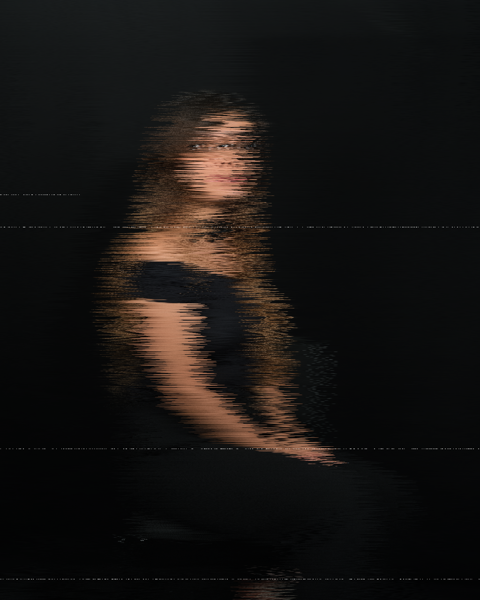
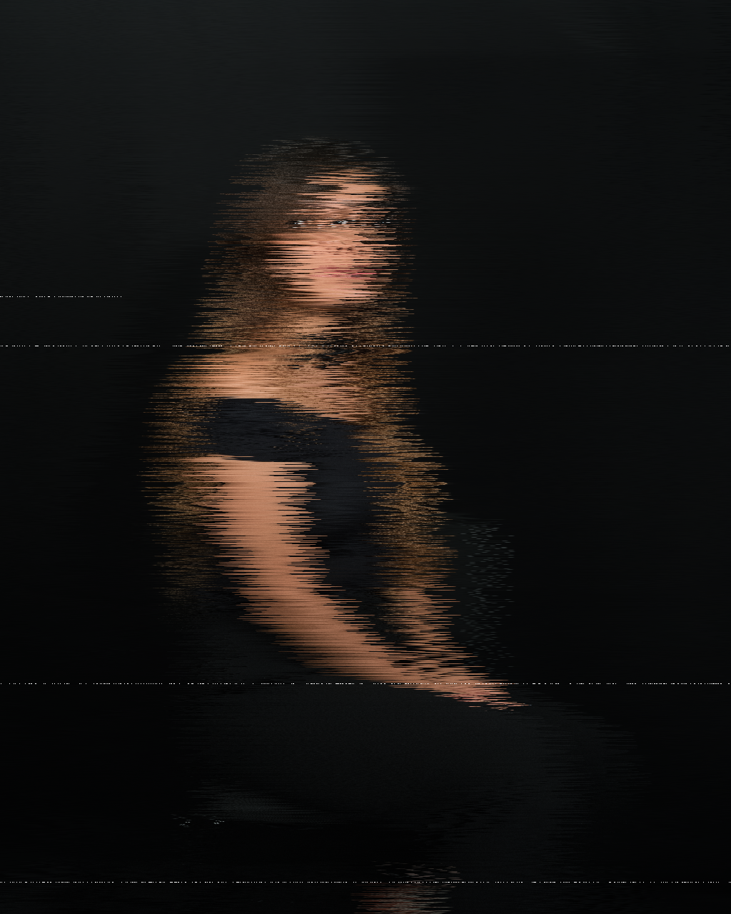

Karla Esquivel (Kaly) es una artista visual que inició su práctica artística en medios plásticos y ha evolucionado hacia lo digital, abarcando escritura, dibujo, pintura, fotografía, gif, fotomontaje, video, modelado y animación 3D. Cada uno de estos lenguajes le permite capturar y reinterpretar experiencias íntimas y significativas, posicionándose como autora y musa de su propio proceso creativo, impulsada por la necesidad de representar sensaciones, percepciones y momentos vividos.
Ha participado en proyectos colectivos como Desfases II, Meta V//siones del Ser y Todos Somos Calavera, desempeñándose como artista, coordinadora y documentalista. Su obra es un diario expandido, una cartografía de su identidad en constante transformación, moviéndose libremente entre lenguajes y formatos sin limitarse a un estilo fijo.